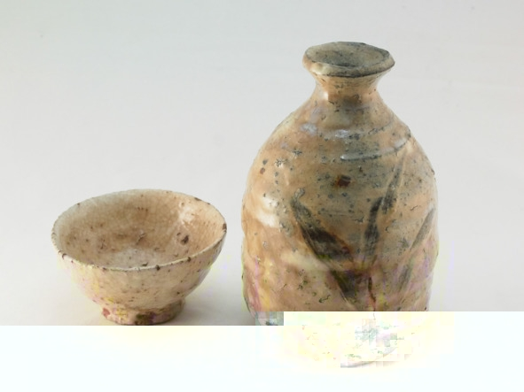
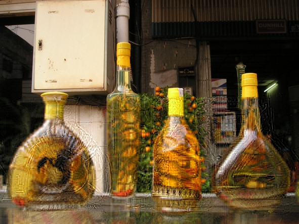

Саке – традиционный японский спиртной напиток крепостью 14—16% об. зеленоватого или желто-янтарного цвета с горьковатым привкусом, получаемый путем сбраживания крупнозернистого риса с помощью особого вида дрожжевого грибка «кодзи». Во вкусе саке выделяются нотки яблок, бананов, винограда, сыра, свежих грибов и соевого соуса. На родине это спиртное называют «нихонсю», так как в японском языке слово «саке» обозначает любой алкогольный напиток, но из-за неточности перевода именно этот термин вошел в международный обиход.
Обыватели считают саке рисовой водкой, но это в корне неверно, поскольку напиток не проходит дистилляции или ректификации и в нашем понимании ближе всего к отфильтрованной рисовой браге. Еще встречается название «рисовое вино», которое можно считать правильным лишь отчасти, так как в виноделии используется фруктовое и ягодное сырье. По органолептическим свойствам саке не имеет аналогов.
Саке появилось около 2 тыс. лет назад при дворе японских императоров и в синтоистских храмах. В Средние века рецепт переняли деревенские общины. Древняя технология производства отличалась от современной: сначала рис пережевывали во рту и сплевывали в емкости для брожения, это был длительный и трудоемкий процесс. Позднее для запуска брожения японцы научились использовать вид плесневого грибка Aspergillus oryzae – кодзи. В XVII веке саке начали экспортировать в другие азиатские страны.
Технология производства сакеДля приготовления саке требуется крупнозернистый рис с высоким содержанием крахмала. Сначала рис шлифуют, чтобы удалить оболочку зерна и зародыш, которые при брожении привносят в саке неприятный аромат и привкус. При прочих равных условиях чем выше степень шлифовки риса, тем лучше качество саке, допустимый диапазон шлифовки – 30—70%. Это значит, что для дорогих сортов саке обтачивают до 70% зерна, используя в производстве только 30% сердцевины зерен.
Отшлифованный рис промывают, замачивают на 2—24 часа (чем выше степень шлифовки, тем меньше времени требуется), затем обрабатывают паром. Рис должен размякнуть, но не перевариться, иначе брожение будет слишком быстрым и саке не успеет вобрать в себя все нотки вкуса.
В пропаренный рис вносят заранее активированные плесневые грибки кодзи, воду и дрожжи. Для успешного брожения нужно расщепить рис в крахмале до простых сахаров. В производстве виски и других зерновых дистиллятов для этого применяется солод – пророщенное зерно, а в саке крахмал до сахаров перерабатывают кодзи. В этом главное отличие саке от других алкогольных напитков на основе зерна.
Рисовое сусло бродит при температуре 15—20 °С (дорогие сорта при 10 °С) 18—40 дней. Чем дольше период брожения, тем выше качество готового напитка. Отбродившее сусло сначала процеживают, получается элитное саке. Затем сусло прессуют, чтобы извлечь из него остатки жидкости, так получают обычные сорта.
Согласно японскому законодательству, саке может называться только напиток, который не содержит осадка, поэтому все виды подвергают фильтрации, иногда для этой цели используется древесный активированный уголь. Также большинство сортов саке пастеризуют, чтобы убить остатки дрожжей, которые могут вызвать повторное брожение в бутылке. Затем саке помещают на 6—12 месяцев в специальные емкости для выдержки. В конечном итоге крепость саке 18—20% об., но перед бутилированием напиток обычно разбавляют до 14—16% об., поскольку японцам не нравится крепкий алкоголь.
Как пить сакеСаке пьют двумя методами: охлажденным или подогретым. Выбор метода зависит от качества и цены напитка. Косвенно качество саке определяется степенью шлифовки риса, для элитных сортов этот показатель должен быть не ниже 50—60%.
Саке премиум-класса подают холодным (5° C) в бокалах для красного вина. Участники застолья подносят наполненный максимум на треть бокал на уровень глаз, затем не чокаясь произносят слово «кампай» – универсальный японский тост, дословно переводящийся как «пьем до дна». Дальше делают глоток. В качестве закуски используются традиционные блюда японской кухни, например суши. К элитному саке нельзя подавать острые блюда, поскольку они искажают вкус.
Саке среднего и бюджетного ценового сегмента пьют подогретым из керамического кувшина (токкури) и маленьких чашечек (чоко), емкость последних рассчитана на два-три глотка.
Нагревание решает сразу две задачи: позволяет согреться в холод и скрыть недостатки самого напитка. Саке нагревают на водяной бане, оптимальная температура подачи – 20—30°С. Чашку наполняют перед каждым тостом. Неприличным считается наливать саке самому себе, это должен сделать другой участник застолья. Горячее саке закусывают морепродуктами, бутербродами, мясом, овощами и другими блюдами. Выбор еды не такой строгий, как в первом случае.

Чоко и токкури
Сетю – слабый японский самогон из «подножного» сырьяСетю (Shochu) – японский алкогольный напиток крепостью 25—35% об. с орехово-земляным привкусом, изготовляемый методом перегонки браги с последующим разбавлением водой. Сырьем чаще всего служат рис, ячмень, батат, гречка и коричневый сахар, однако иногда встречаются и другие ингредиенты: каштаны, семена кунжута, картофель, морковь. Количество дистилляций остается на усмотрение производителя. Родина японского самогона – остров Кюсю, однако в наше время напиток производят на территории всей страны.
«Сетю» – это видоизмененное китайское слово ??, которое примерно переводится как «жженая жидкость» или «огненная вода». Точное происхождение сетю не установлено. Возможно, базой для него послужил восточный арак. Как бы то ни было, в Японии сетю появился как минимум около середины XVI века, а возможно, и раньше. Первое письменное упоминание непосредственно сетю относится к 1559 году. Двое плотников, строивших деревянный храм, вырезали на крыше надпись: «Старший священник такой скупердяй, что даже ни разу не налил нам сетю. Что за незадача!».
От середины XVI века и до конца периода Эдо (1868 год) японский злаковый самогон изготавливали методом однократной перегонки. В период Мэйдзи (1868—1912 гг.) появилась и закрепилась многократная дистилляция.
В начале 2000-х годов начался настоящий бум сетю, особенно среди молодежи и женщин. Впервые за всю историю объемы потребления этого напитка обогнали показатели саке. Причиной тому служат недавние медицинские исследования, доказавшие пользу злакового дистиллята для здоровья: в частности, он снижает риск тромбоза, диабета, сердечного приступа. Сигэтие Идзуми, доживший до 105 лет (по некоторым источникам – до 120), утверждал, что пьет сетю ежедневно и именно ему обязан своим долголетием.
Технология производства сетюСырье замачивают и распаривают, чтобы спровоцировать разрушение кожуры и выделение крахмала. Затем в заготовку добавляют воду, дрожжи и плесневый грибок кодзи, который перерабатывает чистый крахмал на сахар без необходимости вносить солод или ферменты. Отыгравшую брагу подвергают дистилляции и выдержке, затем бутилируют.
Не следует путать сетю и саке, с точки зрения технологии производства это разные напитки. Сетю – дистиллят (самогон) из крахмало- или сахаросодержащего сырья, а саке —питьевая рисовая брага. Сетю гораздо крепче, обладает орехово-земляным привкусом почти без фруктовых ноток.
Виды сетю:
Многократной дистилляции (класс А). Алкогольный напиток, подвергшийся дистилляции более одного раза, разбавленный водой до крепости 36% об. или меньше и соответствующий следующим требованиям:
– для производства использовались непророщенные зерна (напиток не должен быть солодовым);
– для фильтрации использовались не угольные фильтры;
– если в роли базового ингредиента выступал сахар, готовый дистиллят должен обладать крепостью не менее 95% об.;
– напиток не креплен дополнительными спиртами, не входящими в список разрешенных ингредиентов.
Такой сетю часто называют korui shochu («коруй»), он изготавливается из картофеля (обычного и сладкого), кукурузы. Именно на этом виде «специализируются» крупные производства.
Однократной дистилляции (класс В). Алкогольный напиток на основе зерна, картофеля и сахара, подвергшийся однократной дистилляции, крепостью не более 45% об. Иногда встречается название otsurui shochu («оцуруй»). Отличается ярко выраженным вкусом базового ингредиента, в основном производится на малых и средних винокурнях.
Также сетю различают по сроку выдержки (старение происходит в чанах из нержавеющей стали, глиняных сосудах или дубовых бочках):
– 1—3 месяца;
– 3—6 месяцев;
– 6 месяцев – 3 года;
– более трех лет.
Чем больше выдержка, тем мягче вкус и тем меньше чувствуются «сивушные» нотки.
Как пить сетюСетю очень популярен у себя на родине, гораздо сложнее купить напиток за пределами Страны восходящего солнца, так как экспорт минимален и в основном нацелен на японские диаспоры за рубежом.
Существует пять правильных способов пить сетю:
– В чистом виде. Хорошо охлажденным из стопок маленькими глотками, а не залпом, как водку, закусывая блюдами национальной японской кухни.
– Со льдом. Лед охлаждает и при таянии слегка разбавляет сетю.
– Разбавляя водой (по вкусу, вода должна быть теплой, не ниже комнатной температуры).
– С фруктовым соком и молочным улуном (вид чая). Пропорции на вкус, обычно на одну часть алкоголя берут три-четыре части сока или улуна.
– С японским пивным напитком hoppy («хоппи»). Стопку сетю запивают несколькими глотками хоппи.
Авамори – рисовый самогон из ОкинавыАвамори – алкогольный напиток крепостью 30—60% (обычно 35—45%) об., производимый путем сбраживания и дистилляции браги из длиннозерного тайского риса на японском острове Окинава. Авамори запоминается специфическим, сложно передаваемым вкусом и сильным ароматом. Чем старше сорт, тем он «душистее». Для западных ценителей спиртного запах может показаться чрезмерно сильным: одновременно чувствуются земляные, сладковатые и даже цветочные нотки, хотя ни один из этих ингредиентов не входит в состав.
Сами окинавцы называют свое спиртное «островным саке» («шима-саке») или просто и коротко – «шима». Название напитка приблизительно переводится как «полный пены», от японских слов «ава» – «пена» и «мори» – «наполняться». Возможно, это связано с тем, что в процессе перегонки рисовое сырье дает много пены. По другой версии, «ава» означает «пшено», из которого когда-то изготавливали первый авамори.
Первые письменные свидетельства существования авамори относятся к XV веку, в те времена это был придворный напиток государства Рюкю. Поставщиками королевского двора стали 30 семей, получивших наследственное право «гнать» и продавать рисовый самогон. Многие из сегодняшних производителей являются родственниками тех винокуров. В период с XV по XIX век авамори был частью дани крошечного островного государства могущественным соседям – Китаю и Японии, что почти никак не отразилось на невысокой популярности напитка за пределами архипелага. В 1879 году Окинава вошла в состав Страны восходящего солнца, но «островная водка» так и не потеснила с пьедестала саке.
В 1945 году бомбардировки армии США уничтожили запасы элитного авамори (срок выдержки некоторых бутылок достигал 200—300 лет). В ходе последующей американской оккупации национальный напиток уступил на местном рынке западному алкоголю, в частности виски. В 1983 году правительство Окинавы издало указ, регулирующий технологию производства авамори. Появилась четкая граница между этим дистиллятом и другими видами рисовых дистиллятов. Сегодня центры потребления авамори сосредоточены преимущественно в окинавских диаспорах и на самом архипелаге.
Особенности производства АвамориДля настоящего авамори годится только длиннозерный рис, импортируемый из Таиланда («тай-май»). Дробленые зерна заливают теплой водой, затем варят на паровой бане, добавляют воду, дрожжи и местный черный плесневый грибок кодзи (иногда эту плесень ошибочно относят к дрожжам), который перерабатывает крахмал на сахар. Полученную массу отправляют на ферментацию (брожение).
Примерно через полмесяца отыгравшую брагу подвергают однократной перегонке, после чего напиток готов к употреблению. Однако чаще всего молодой авамори переливают в керамические сосуды и выдерживают от шести месяцев до 30 лет (хотя встречается и более длительная выдержка). Сегодня уже не все производители строго следуют традициям, поэтому иногда окинавский алкоголь может стариться не в керамических или глиняных кувшинах, а в обычных дубовых бочках.
Виды авамори– Обычный (выдержка до трех лет);
– ароматизированный (с добавлением пряностей и отдушек). К этому виду относится не более 1—2% от общего объема;
– кусу (дословный перевод – «старая жидкость», выдержка от трех лет). «Кусу» – оригинальное окинавское произношение, в других японских регионах те же иероглифы читаются «кошу» и означают выдержанное саке, что нередко становится причиной путаницы;
– ханадзаке (крепкий – 60% об. – дистиллят с острова Йонагуни);
– хабусю (со змеей в бутылке).
Отличия авамори от сетю и саке
Что касается саке, то его с авамори никак не спутать: оба напитка изготавливаются из риса, но на этом сходство заканчивается. Авамори – дистиллят, то есть технически принадлежит к классу самогонов. Саке же не проходит этап перегонки, поэтому правильнее называть его питьевой брагой.
Как пить авамориАвамори – непременный атрибут религиозных торжеств и семейных праздников, который подают перед едой для улучшения аппетита. Традиционно напиток разливают в простые стеклянные бутылки объемом до 1 л, но в продаже встречаются и декоративные керамические сосуды. Кроме того, в XX веке на Окинаве появилась традиция: в день рождения малыша семья торжественно покупает красивую бутылку авамори, наклеивает на нее фотографию ребенка, а через 20 лет опустошает, чтобы отпраздновать взросление наследника.
Авамори правильно пить из небольших керамических наперстков – «чоку», но сегодня дистиллят часто разливают в обычные стаканы со льдом или разбавляют холодной водой в пропорции 1:1. Раньше авамори подавали в специальном глиняном кувшине «кара-кара»: внутрь помещали маленький глиняный шарик, издававший характерный звук «кара-кара», извещавший хозяина о том, что сосуд пуст. На Окинаве авамори считается эликсиром дружбы – люди, распившие кувшинчик «кара-кара», уже никогда не будут чужими друг другу. Именно поэтому «рисовый бренди» нередко подают на официальных церемониях и правительственных саммитах.
Самураи пили авамори горячим: одну часть рисового дистиллята разбавляли тремя частями кипятка и потягивали маленькими глотками, согреваясь зимними вечерами.
В окинавских ресторанах к национальному алкоголю неизменно подают мисочку со льдом или графин воды. Очевидно, что лучше всего авамори сочетается с местной кухней, однако напиток также составляет неплохие гастрономические пары с японскими, китайскими, итальянскими или французскими блюдами. Цена авамори прямо пропорциональна выдержке.
Маотай – элитный китайский дистиллят из соргоМаотай (Moutai) – это прозрачный китайский злаковый дистиллят крепостью 35—60% об. с характерным соевым привкусом. Название защищено по региональному принципу. Бренд изготавливают в одноименном городе провинции Гуйчжоу, сырьем для напитка служит ферментированное китайское сорго (гаолян) и пшеница.
История маотая началась 2 тыс. лет назад: китайские летописи II в до н. э. рассказывают о напитке гоцзян (слабоалкогольная брага из риса), который после изобретения дистилляции эволюционировал в современный вариант. У крестьян на севере страны, ежедневно работавших на рисовых плантациях по колено в холодной воде, не было другого выхода, кроме как придумать крепкий согревающий алкоголь. Однажды местную «огненную воду» попробовал император, и напиток так понравился монарху, что он приказал наладить производство и в своей провинции.
Когда большая часть Поднебесной еще пила легкие браги, на севере страны и в Гуйчжоу появился самогон. Жители городка Маотай взяли за основу рецепт гоцзян, но со временем дополнили его (в частности привязали циклы производства к лунному календарю), а также использовали вместо риса сорго, что изменило вкус.
Точную дату начала производства установить сложно, однако название «маотай» закрепил за напитком в 1704 году указ императора династии Цин. В 1915 году китайский самогон завоевал золотую медаль на выставке в Сан-Франциско, а в 1951 году получил титул национального алкоголя Китая. Всего на счету маотая более 20 побед в крупных международных конкурсах, не говоря уже о локальных мероприятиях.
Бренд стал первым китайским алкоголем, производство которого превысило 170 тонн продукции в год (сегодня этот показатель достигает 30 тыс. тонн). Напиток является непременным атрибутом всех официальных мероприятий в Китае, продается в 100 странах мира и является ощутимым источником дохода страны, так как компания-производитель Kwiechow Moutai Company принадлежит государству.
Долгое время маотай был спиртным элиты, недоступным обычному потребителю – в первую очередь из-за дороговизны, обусловленной длительностью и трудоемкостью производства. Теперь ситуация изменилась, но стоимость китайской водки по-прежнему высока: цена одной бутылки начинается от $130, а верхнего порога не существует – известны случаи, когда напиток уходил с аукциона за десятки тысяч долларов. Как раньше, так и сейчас спрос значительно превышает предложение.
Технология производства маотаяЗа основу берут равные доли местной пшеницы и сорго. Злаки подвергают сбраживанию на специальной закваске цзю цуй, которая содержит плесневые грибки (перерабатывают крахмал в зерне на сахар) и обычные дрожжи. После нескольких перегонок дистиллят выдерживают в керамических емкостях не менее трех лет и фильтруют.
Молодой маотай смешивают (купажируют) с образцами постарше. Выдержка отдельных спиртов может доходить до 50 лет. Полученный напиток разливают в бутылки и поставляют на рынок. Несмотря на высокую крепость (современный маотай продают в двух вариациях: 35 и 53 градусов), китайский самогон мягкий и легко пьется даже без закуски.
Настоящий маотай может производиться только в одноименном поселке – характерный вкус напитка обусловлен сочетанием местных климатических условий и воды из реки Чишуйхэ. Точное соблюдение технологии в любом другом месте не даст нужного эффекта.
Запах бродящего сорго такой резкий, что им буквально пропах весь город Маотай, тем более что на производстве водки трудится более половины жителей этого населенного пункта.
Отличия маотая от водкиХотя в России маотай часто называют водкой, на самом деле это зерновой самогон.
Как пить маотай
Правильно пить маотай из маленьких фарфоровых пиал, причем «рюмка» никогда не должна оставаться пустой. В чисто мужской компании напиток не спеша потягивают, смакуя вкус и аромат, но при дамах мужчины всегда выпивают свою порцию залпом, до дна.
Нередко бутылка маотая комплектуется двумя-тремя крошечными стаканчиками – это неслучайно, именно такая порция считается оптимальной, чтобы насладиться вкусом, но сохранить относительно ясную голову.
Напиток хорошо сочетается с традиционными китайскими блюдами, особенно острыми, но закуска не обязательна: истинные гурманы предпочитают прочувствовать чистый букет, в котором дегустаторы насчитали 155 ноток.
Социальный аспектБутылка маотая считается идеальной взяткой – это достаточно солидный и дорогой подарок, который не стыдно преподнести официальным лицам, при этом формально по местному законодательству под определение взятки не подпадает.
Нередко люди покупают китайскую водку только как экспонат для своей коллекции или запасают на случай похода в вышестоящие инстанции. В Китае даже есть поговорка: те, кто покупают маотай, его не пьют, а те, кто пьют – не покупают.
Соджу – корейский солодовый дистиллятУ себя на родине соджу пользуется народной любовью и уважением, экспортируется в 80 стран, а в 2014 году марка Jinro Soju получила титул самого продаваемого алкогольного бренда в мире, правда, более 90% продукции реализовано в Южной Корее.
Соджу (Soju) – национальный корейский алкогольный напиток крепостью 16—45% об., представляет собой прозрачную сладковатую жидкость с характерным запахом спирта. Производят соджу путем осахаривания, сбраживания и перегонки крахмалосодержащего сырья (картофеля или зерна) с последующим разбавлением водой. Допускается наличие в составе ароматических добавок. Слово soju в буквальном переводе с корейского языка значит «подожженный (пламенный) алкоголь» и намекает на процесс перегонки браги на открытом огне.
Русские неоднозначно отзываются о вкусе соджу: для одних это мягкое, согревающее спиртное со сладким травяным послевкусием, для других – слабая водка с запахом одеколона.
Легенды и исторические данные утверждают, что соджу изобретен в самом начале XIV века – именно тогда монголы захватили Корею и принесли с собой рецепт арака (восточной анисовой настойки), а заодно и искусство дистилляции. Со временем арабская анисовка адаптировалась к новым территориальным условиям и превратилась в современный соджу. Первые производства образовались вокруг города Кэсон, и в том регионе соджу по-прежнему больше известен под названием «арак-джу».
Любопытно, что корейский самогон популярен в обеих частях страны – и Южной, и Северной, и даже жесткий режим чучхе (коммунистическая идеология, разработанная Ким Ир Сеном) не смог запретить гражданам употреблять любимый национальный алкоголь.
Классический соджу изготавливают только из натуральных ингредиентов – ячменя, риса или пшеницы. Однако на протяжении почти 30 лет (с 1965 по 1991 годы) с целью снизить расходы зерновых культур такая рецептура находилась под запретом. Тогда корейцы научились просто разбавлять обычный этиловый спирт ароматизаторами (традиционный соджу перегоняют на дистилляторе, как самогон, а не получают на ректификационной колонне, как спирт). Сегодня в «полуфабрикатах» нет необходимости, но около 35% корейского соджу по-прежнему изготавливается кустарным, дешевым методом.
Современные производители нередко заменяют рис более дешевыми компонентами: картофелем, сладким картофелем (бататом), тапиокой.
Настоящий соджу должен пройти следующие этапы производства:
– размалывание, отжим сырья, добавление воды и осахаривание крахмала солодом;
– сбраживание;
– дистилляция в перегонном кубе;
– фильтрация через бамбуковый древесный уголь.
В отличие от саке, маотая, сетю и авамори, для осахаривания крахмала в производстве соджу используется солод, а не плесневые грибки. Это значит, что технология производства соджу ближе к виски, чем к другим азиатским спиртным напиткам.
В последнее время южнокорейское правительство держит курс на снижение крепости соджу, все более популярным становится совсем слабенький вариант, крепостью до 18% об. Возможно, это связано с тем, что в Южной Корее принято ходить по барам с коллегами и начальством, чтобы укрепить рабочие отношения. Поскольку шеф обязательно должен выпить с каждым подчиненным, в его интересах перейти на слабоалкогольное спиртное.
Соджу производят также в Китае – но не коренные жители Поднебесной, а этнические корейцы. Дело в том, что за пределами полуострова рис значительно дешевле, соответственно, и себестоимость напитка получается ниже.
Как пить соджуИз-за низкой крепости и сладковатого привкуса культура употребления корейского дистиллята сильно отличается от водочного этикета в России. Соджу можно пить в чистом виде из небольших стеклянных стопок, температура сервировки – 16—20° C. Однако нередко напиток разбавляют тоником, сахарным сиропом или другим лимонадом, добавляют вкусовые ароматизаторы дыни, лимона или арбуза.
Несмотря на то что соджу подают в маленьких стопках, осушать порцию за один раз считается дурным тоном. Также важно соблюдать еще три правила:
– наполнять рюмку себе самому считается дурным тоном. Пока рюмка не опустеет, доливать нельзя;
– пить соджу мелкими глотками (иногда по согласию всех собравшихся первую стопку выпивают залпом);
– во время каждого глотка молодые участники застолья отворачиваются от сидящих за столом старших «товарищей», это считается признаком уважения.
Закусывают соджу мясом, рыбой, салатами и другими сытными блюдами. Смелым корейским мужчинам нравится коктейль «Поктанджу» – это стопка соджу, опущенная на дно кружки с пивом. Полученный «корейский ерш» выпивают залпом.
Настойка со змеей (змеиное вино)Восточное изобретение, популярное в странах Азии, особенно в Китае и Вьетнаме. Это спиртовая настойка на кобрах или других ядовитых рептилиях. Рецептура может меняться в зависимости от страны или региона, но общая методика выглядит так: живую змею выдерживают в чистой пустой емкости несколько недель, чтобы животное избавилось от экскрементов, затем помещают в бутылку или банку, заливают рисовым дистиллятом или любым другим крепким алкоголем, иногда вином, по желанию, добавляют женьшень и другие травы, закрывают пробкой и оставляют настаиваться до года.
Поскольку на момент закупорки змея еще жива, ее органы начинают работать с удвоенной силой и вырабатывают целебные вещества, чтобы животное продержалось как можно дольше. В напиток выделяется змеиный яд и желчь, которые нейтрализуются этиловым спиртом, сохраняя полезные свойства.
В большинстве стран импорт подобных настоек нелегален, так как для производства зачастую используются змеи, скорпионы и другие животные, занесенные в Красную Книгу. Это следует учитывать туристам, покупающим напиток в качестве сувенира.

Настойку со змеей можно пить маленькими порциями не более 50 мл в день, иначе она принесет больше вреда, чем пользы. В китайской народной медицине считается, что напиток помогает от:
– артрита;
– кашля;
– гормональных сбоев;
– расстройств нервной системы;
– проблем с памятью;
– и других болезней.
Настойка оказывает общеукрепляющий и омолаживающий эффект, повышает иммунитет и жизненный тонус, помогает бороться с синдромом хронической усталости.
ОпасностьКак и любое сильнодействующее вещество, настойку на змее следует принимать в гомеопатических дозах. Кроме того, прежде, чем открыть бутылку, нужно убедиться, что змея действительно погибла, а не просто впала в кому. Пресмыкающиеся очень живучи, даже после нескольких месяцев в спирте змея может прийти в себя и укусить дегустатора. Поскольку для изготовления такого напитка обычно используются ядовитые змеи, это смертельно опасно.
Вторая проблема – недостаточная выдержка или неправильная технология изготовления, в результате яд не полностью нейтрализуется спиртом. Чтобы минимизировать этот риск, следует выбирать крепкие настойки, а не легкие вина.